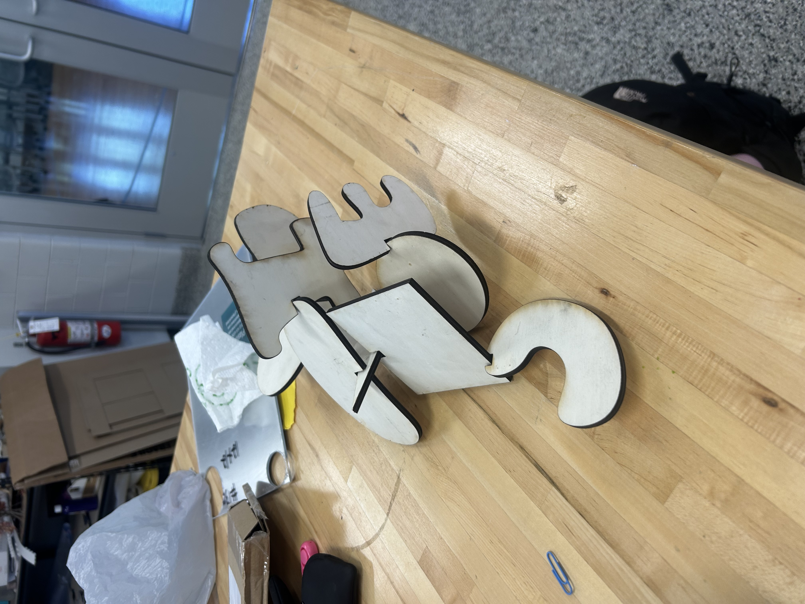

Project Name: More Than a Piece: Reframing the Immigrant
Story
More Than a Piece is a modular, laser-cut wooden puzzle
sculpture that explores how Hispanic immigrants are
fragmented, labeled, and misunderstood within U.S.
media and public discourse. Each puzzle piece represents
a different facet of immigrant identity—culture, labor,
family, resilience, and lived experience—using paint,
collage, and textured surfaces to highlight the humanity
behind the headlines. When assembled, the pieces form a
unified whole, symbolizing how immigrants shape the
nation despite being reduced to stereotypes such as
“illegal” or “criminal.” The backs of all pieces are
painted in the colors of the American flag to emphasize
that immigrants are not outside the nation but
foundational to it. The work invites viewers to
reconsider how they piece together their understanding
of immigration and challenges them to confront the gap
between media narratives and lived reality.
